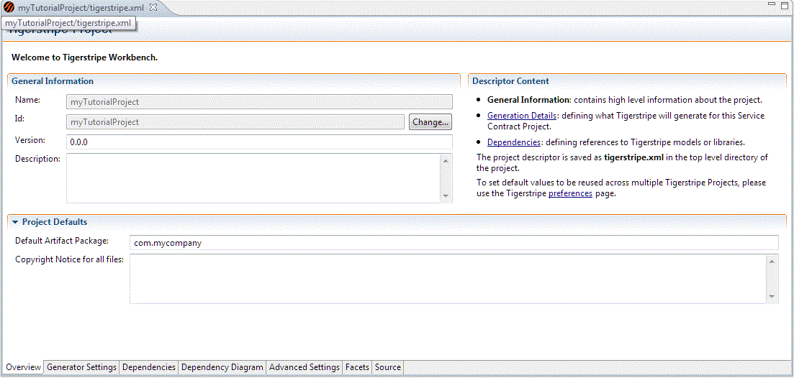

Tigerstripe Project Descriptor
Each Tigerstripe Project contains a project descriptor, named tigerstripe.xml, in the top-level directory of your Tigerstripe Project. Details such as the project name, version, and project description are stored in the project descriptor file. The descriptor file also contains the details about what is generated when creating the corresponding Service Contract(s), as modeled in a Tigerstripe Project.
Note: You should not edit the Tigerstripe project descriptor. Tigerstripe Workbench offers a form-based editor for the descriptor that ensures that the descriptor remains valid. To open the editor, double-click tigerstripe.xml in your Tigerstripe Project.
Project Descriptor Content
The project descriptor is organized in several sections. Each section focuses on a specific aspect of a project and appears as a separate tab in the Tigerstripe Descriptor Editor as shown below.

Each tab allows you to edit the corresponding information:
- Overview Tab: contains high-level information about the project, such as the project name, version, and a project description.
- Generator Settings Tab: contains details about which generators should be run against the model project and all the associated property settings for those generators.
- Dependencies Tab: contains details about the dependencies required by the project, and their location.
- Dependency Diagram Tab: contains a visual representation of the model dependencies.
- Advanced Settings Tab: contains a number of properties whose values apply across all generation tasks.
- Facets Tab: contains details of which facets to apply to this model project.
- Source Tab: provides a source view of the tigerstripe.xml file.
Note: Use of this tab is not recommended and should only be used by experienced users.
Overview Tab
The Overview tab contains project-level information used to identify the project and customize the generated Service Contracts for the project. This tab is organized in two sections: the General Information section and Project Defaults section.
The General Information section contains basic identification information for the project:
- ID: the name of the project as it appears in Tigerstripe Explorer. This identifier is local only to the Eclipse workspace and is not used when you publish or generate the project.
- Name: the name of the project. This name is used when the project is published and/or exported into a Tigerstripe Module.
- Version: the version of the project. The version number can be of any String format and can contain an identifier for the project version. This version number is published and exported.
- Description: a textual description for the project. This description is used when the project is published and/or exported to a Tigerstripe Module.
The Project Defaults section contains default values applied within the context of the project:
- Default Artifact Package: whenever a new artifact is created within the project, it is created in the package specified by this field. This is particularly useful when creating multiple artifacts in a deep package structure. If this fields does not contain a valid package name (according to JAVA standards), an error is raised by the Tigerstripe project auditor.
- Output Directory: the directory where all generated files are stored. This directory is relative to the top-level project directory and should have a valid directory name.
- Copyright Notice of all Files: this field contains the copyright notice included in the header of all files generated by the Tigerstripe. For more information on how to customize the generated file, refer to Generated Code Customization.
- Other OSS/J Specific Defaults: this section allows you to configure how the OSS/J common API is referenced in the generated XML schemas. This section contains default values pointing to the official OSS/J website. Experts can change them to accommodate access restriction through firewalls.
None of the above fields are mandatory except for the Output Directory. If this directory is not populated, an error will display. If you leave any of the other fields empty, warning and informational level messages will display.
The Generate Tab allows you to control which integration profile is generated, and the detailed configuration of all parameters attached to each individual profile. Refer to Service Contract Generation Tasks for more details on how to configure the project generation details.
Dependencies Tab
The Dependencies Tab allows you to control the required project dependencies. For more details on how to work with dependencies, refer to Tigerstripe Project Dependencies.
Dependency Diagram Tab
The Dependency Diagram Tab takes you to a diagram which displays the required project dependencies in an easily readable visual manner. For more details on Dependency Diagrams, refer to Dependency Diagrams.
Advanced Settings Tab
The Advanced Settings Tab has some properties whose values are used for all generators:
- Target Directory : This sets the destination directory which is the root directory for all generator outputs.
- Clear target directory before generate : If unchecked, then the target directory will not be cleared, and existing files will attempt to overwrite files in the target directory.
- Generate Report : If checked, a report (called tigerstripeReport.xml) be be created and placed in the target directory.
Facets Tab
The Facets Tab allows you to specify the factes that can be applied to the project at generation time.
Source Tab
The Source Tab is a text editor used to edit the content of the tigerstripe.xml project descriptor.
Note: The use of this tab should be reserved to experienced users only and can be used if the tigerstripe.xml descriptor becomes invalid or corrupt for any reason!
Related Topics
Source Model
Project Dependencies
Dependency Diagrams
 Project Dependencies
Project Dependencies
-->
© copyright 2005, 2006, 2007 Cisco Systems, Inc. - All rights reserved